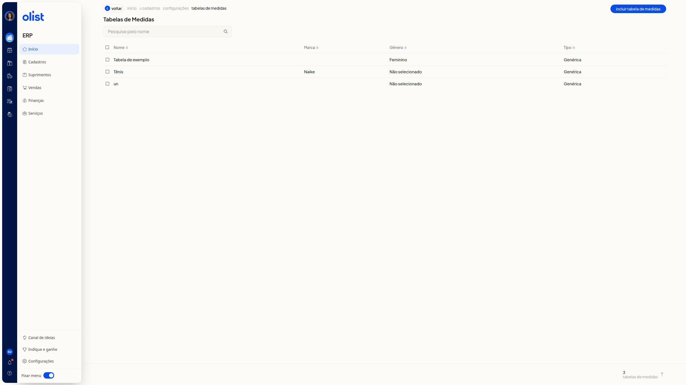
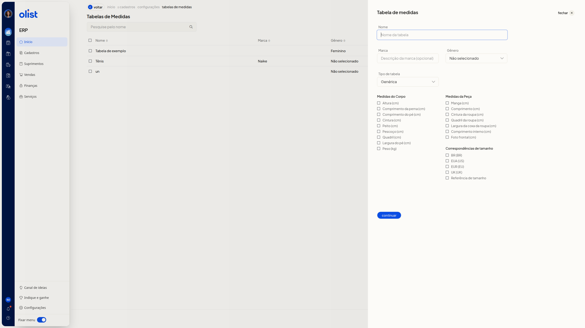
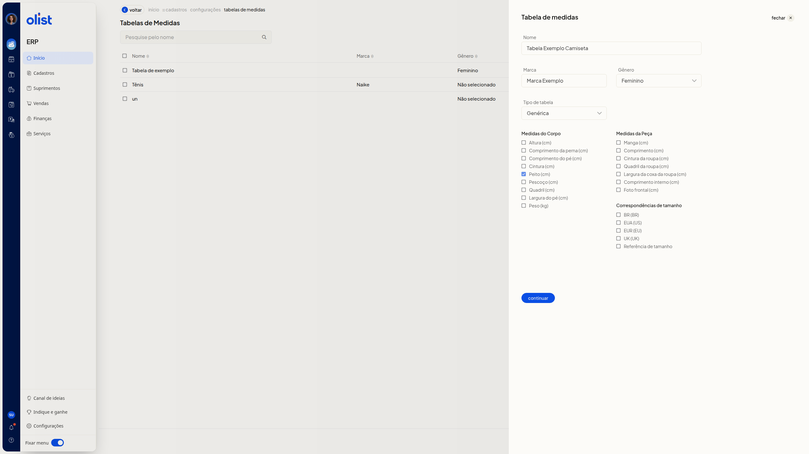
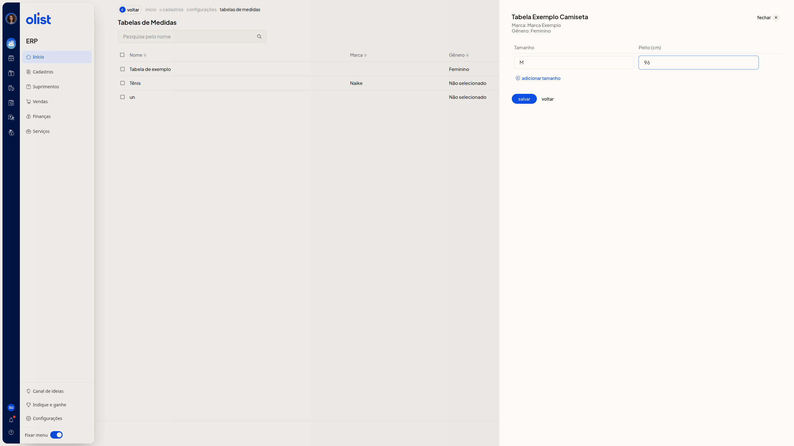

Tabelas de medidas - Vestuário: Roupas e calçados
Descrição
A página Tabelas de Medidas do ERP da Olist lista tabelas de vestuário e calçados. Você consulta as tabelas cadastradas e inclui uma nova tabela: primeiro nome, marca, gênero, tipo e medidas, depois tamanhos e valores. A gravação fica no botão Salvar.
Para abrir a página, acesse início > cadastros > configurações > tabelas de medidas.
Pré-requisitos
Antes de começar, você precisa:
- estar autenticado no ERP e conseguir abrir a página Tabelas de Medidas por início > cadastros > configurações > tabelas de medidas
- ter a permissão de variações
- ter a permissão para configurar tabelas de medidas
Instruções
Como abrir a página Tabelas de Medidas
-
No ERP, acesse início > cadastros > configurações > tabelas de medidas. A página Tabelas de Medidas mostra Pesquise pelo nome, a listagem com as colunas Nome, Marca e Gênero e o botão Incluir Tabela de Medidas.

Como criar uma tabela de medidas
-
Na página Tabelas de Medidas, clique em Incluir Tabela de Medidas.

-
Preencha Nome. Preencha Marca, se quiser. Selecione Gênero. Selecione Tipo de tabela. Nenhum desses campos é obrigatório. Marca é opcional.
- Em Gênero, selecione Não selecionado, Masculino, Feminino, Meninos ou Meninas.
- Em Tipo de tabela, selecione Genérica, Moda - Medidas da peça, Moda - Medidas do corpo ou Moda - Medidas combinadas.
- Marque as medidas que a tabela deve usar. As caixas ficam nos grupos Medidas do Corpo, Medidas da Peça e Correspondências de tamanho.
-
Altura (cm)
-
Comprimento da perna (cm)
-
Comprimento do pé (cm)
-
Cintura (cm)
-
Peito (cm)
-
Pescoço (cm)
-
Quadril (cm)
-
Largura do pé (cm)
-
Peso (kg)
-
Manga (cm)
-
Comprimento (cm)
-
Cintura da roupa (cm)
-
Quadril da roupa (cm)
-
Largura da coxa da roupa (cm)
-
Comprimento interno (cm)
-
Foto frontal (cm)
-
Em Correspondências de tamanho, marque BR (BR), EUA (US), EUR (EU), UK (UK) ou Referência de tamanho.

-
Clique em Continuar.
-
Confira o nome, a marca e o gênero. Informe Tamanho e o valor de cada coluna de medida exibida. Informe ao menos uma linha de tamanho e o valor da medida marcada. O painel mostra a tabela em preenchimento, com a linha de tamanho e a medida marcada pronta para confirmação. Na tela também estão Adicionar tamanho, Voltar e fechar. Clique em Salvar para gravar. Se não quiser gravar, pare antes de Salvar.

Links relacionados
Se precisar de ajuda com tabelas de medidas, fale com o suporte.